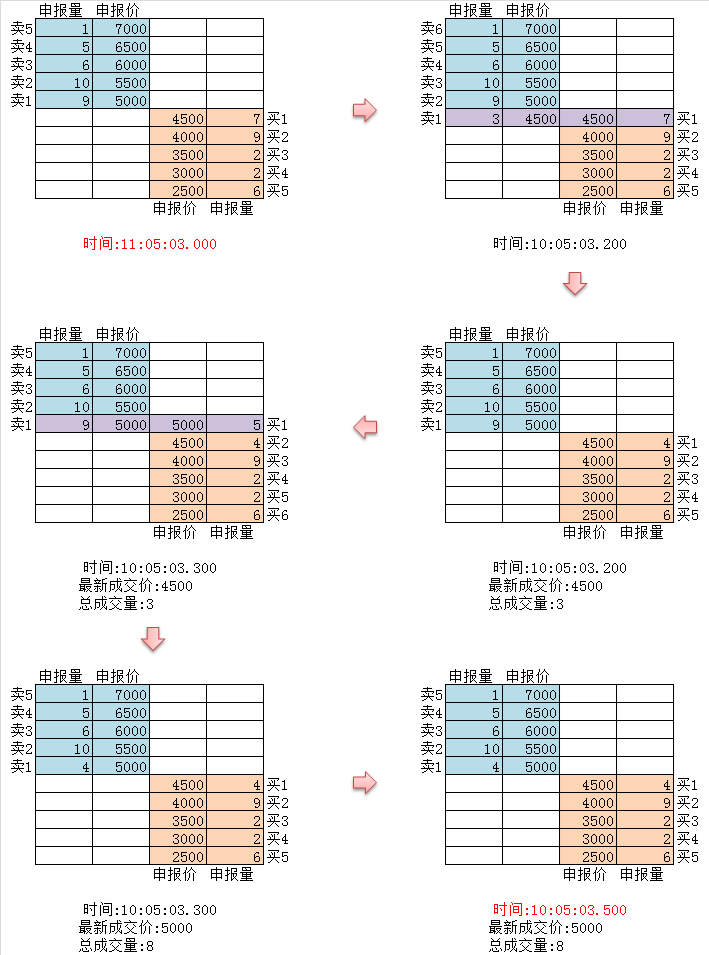

很详细的解释了国外的TickData和处理方法,而因为国内的交易所都只发送切片信息,而不是真实的Tick信息,所以还是有一定差别的,我来补充说下国内交易所一般所说的Tick数据。
国内交易所的order book的数据维护都是实时进行的，但是和国外交易所不同，并不是每个动作都会实时推送到市场上来，而是根据指定的时间间隔进行一次检查，如果该时间段内有动作，则生成一次快照并且推送出来，数据的推送充其量只能算做OnTime，而不能叫做OnTick（被动触发还是主动检测对用户没有区别，此处为了方便说明而取前一种方式）
以切片间隔时间为500ms的五档行情举例，上图来说明：
插入图片 
在11时05分03秒200毫秒的时候，有人以4500的价格卖出3手，系统将其价格与买一价进行匹配，发现符合撮合条件，则撮合之，以价格4500成交3手，最新成交价为4500，总成交量为3手，而此时因为未到切片时间，所以不会推送数据出来。
在11时05分03秒300毫秒，又有人以价格5000买入5手并成交，最新成交价变为5000，总成交量为8手，此时仍未到切片时间，仍不会推送数据。
一直等到11时05分03秒500毫秒，系统判断在11:05:03.000-10:05:03.500这个时间段内有数据变化，则将盘口的买卖信息以及汇总的成交信息——最新成交价5000，总成交量8手——生成一份快照，并推送出来，这就是我们能够接收到的Tick Data。
我们可以发现，因为是一段时间内的交易信息汇总，所以我们只能得到最新的成交价和总的成交量，相比每次变化都会及时推送的Tick Data，丢失了不少信息。
此机制会产生一些值得注意的现象
一、信息的丢失
按上图流程所示，如果4500是当日的最低价，则可能会出现因为信息丢失而导致无法根据tick获取到当日最低成交价的情况,所以国内交易所都会单独推送一份当日最高最低价以弥补。
二、信息的延迟
如果是做时间间隔小于500ms的高频交易的话，因为无法及时获取市场信息，在这500ms内基本等于是在摸黑前进，增加了不少交易风险
作者：keyword 链接：https://www.zhihu.com/question/26950456/answer/40635266 来源：知乎 著作权归作者所有。商业转载请联系作者获得授权，非商业转载请注明出处。